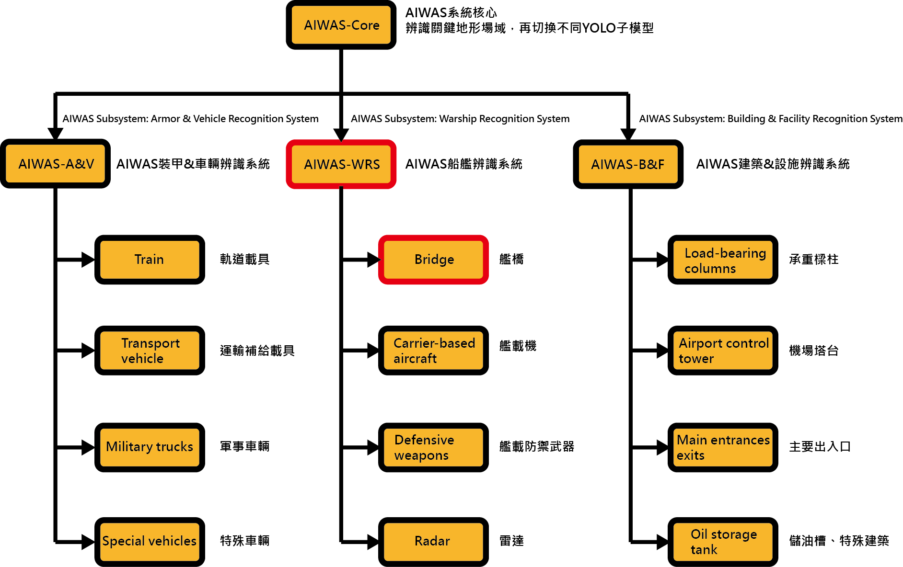
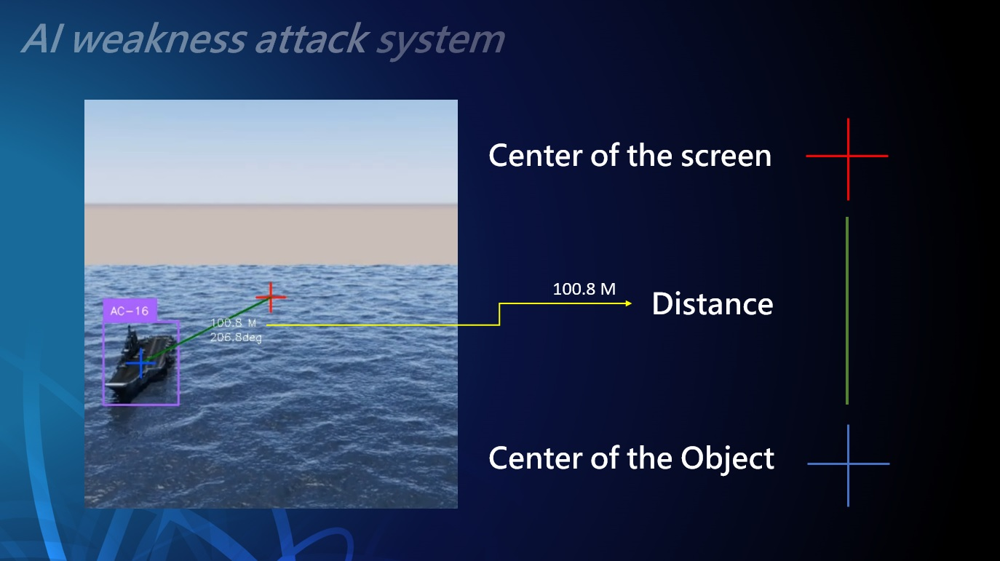
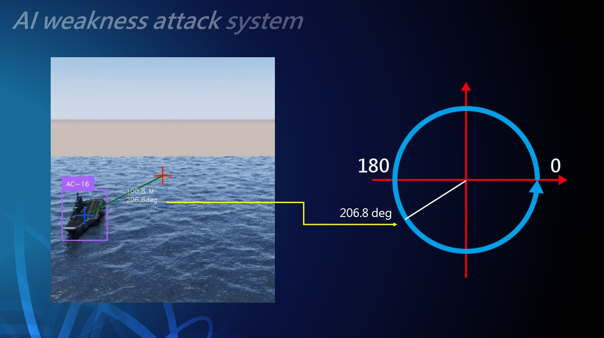
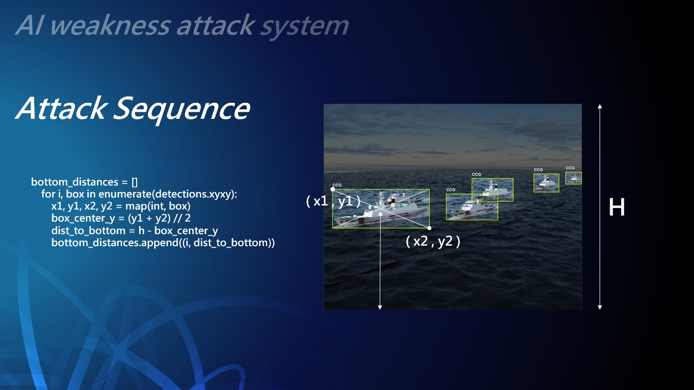
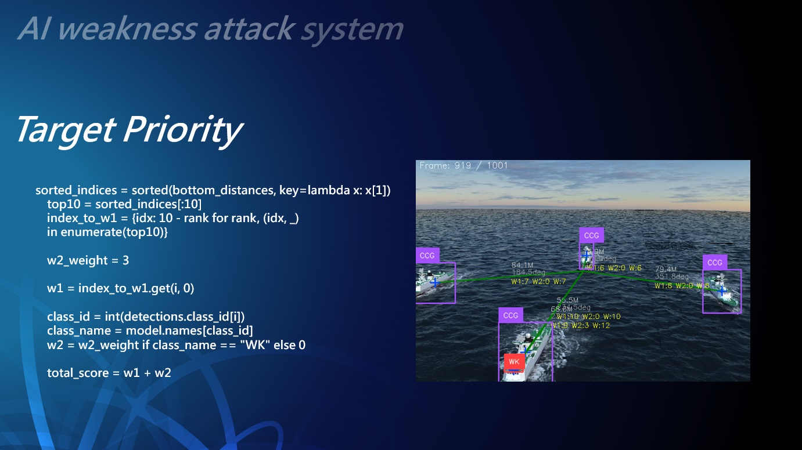
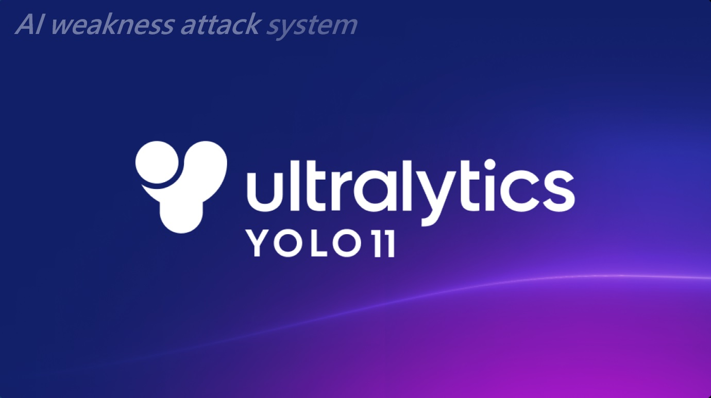
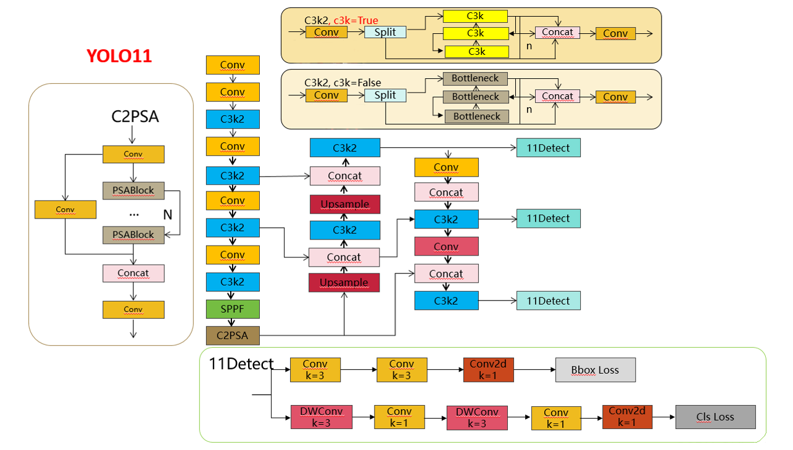
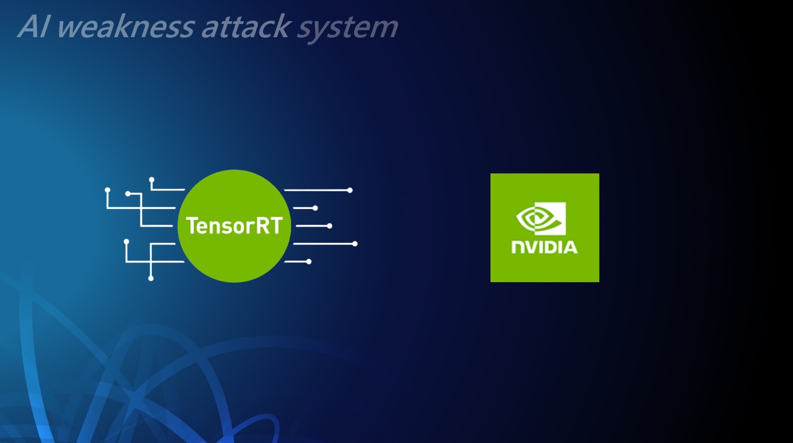

AIWAS
AI Weakness Attack System - 人工智慧弱點精準打擊系統
結合 AI 與嵌入式系統的邊緣運算方案，以高精度 3D 影像資料庫訓練弱點辨識模型。
AIWAS
AIWAS 專注於結合 AI 與嵌入式系統，提供可靠、低功耗、可即時反應的邊緣運算方案，讓模型在各類受限環境中一樣能穩定執行。
我們同時提供高精度 3D 建模與資料庫建置，支援 AI 訓練、模擬與可視化展示，打造端到端的智慧感知能力。
- 即時反應與高可靠性
- 輕量化與低功耗
- 專用化與整合性
AIWAS-WRS-bridge
AIWAS-WRS 船艦辨識系統，bridge－以艦橋為弱點識別。
展示為 055 大型飛彈驅逐艦－南昌號 — 中國一級艦艇影像資料庫
我們運用高精度 3D 影像資料，建立「中國一級艦艇」的專屬資料庫，並以此訓練出能夠精確鎖定艦橋的智慧攻擊辨識系統。該系統能在實戰環境中快速判斷目標艦橋位置，提供精準打擊的決策支援。
- 建構中國一級艦艇影像資料庫
- 以艦橋為弱點目標辨識
- 實現高速、精準的攻擊判斷

AIWAS－全系統架構
AIWAS 所搭載的硬體系統採用「主系統核心模型 + 子模型切換」的分層架構。在運行時，核心模型會先進行初步判斷，例如辨識作戰場景中的大範圍條件（海面、陸地、空域等）。當核心模型偵測到符合特定條件的對象後，系統便會自動切換到對應的 YOLO 子模型，進行更精細的識別與分析（例如：車載裝甲辨識、船艦弱點辨識、建築物設施辨識等）。
這種架構的優點在於：
- 效率最佳化：避免所有模型同時運行，降低運算負擔。
- 彈性擴充：可根據任務需求新增或替換子模型。
- 精準分流：讓不同子模型專注於其擅長的領域，提升辨識正確率。
AIWAS-WRS-Defensive Weapons
AIWAS-WRS 船艦辨識系統，Defensive Weapons－以艦載防禦武器為弱點識別。
展示為 055 大型飛彈驅逐艦－南昌號 — 中國一級艦艇影像資料庫
我們運用高精度 3D 影像資料，建立「中國一級艦艇」的專屬資料庫，並以此訓練出能夠精確鎖定艦載防禦武器的智慧攻擊辨識系統。該系統能在實戰環境中快速判斷艦載防禦武器位置，提供精準打擊的決策支援。
- 建構中國一級艦艇影像資料庫
- 以艦載防禦武器為弱點目標辨識
- 實現高速、精準的攻擊判斷
AIWAS-WRS-Carrier-based aircraft
AIWAS-WRS-Carrier-based 航母艦載機攻擊子系統。
展示為福建號航空母艦 — 中國一級艦艇影像資料庫
系統於接觸航母一定距離內，切換子系統對甲板的艦載機進行偵測與攻擊鎖定。透過高精度影像辨識與邊緣 AI 運算，能即時識別降落階段的敵方艦載機，並提供即時鎖定能力及判定目標順序，大幅提升精準打擊效率，同時降低戰場中對多目標的反應延遲。
- 建構中國一級艦艇影像資料庫
- 以艦載機為弱點目標辨識
- 實現高速、精準的攻擊判斷
AIWAS-WRS－蜂群戰術
多方位、多角度突擊，掩護高規武裝突圍。
展示為南昌號大型飛彈驅逐艦 — 中國一級艦艇影像資料庫
多通道協同掩護，提升高性能火力突進成功率。採用立體化掩護策略，支援高配武器群的快速突擊。協同不同攻擊面向，建立穩定且可重複的突入通道。
- 「多方位、多角度攻勢──為高配武裝鋪就突破之路。」
- 「立體火力掩護，讓主力武器無阻前行。」
- 「環繞壓制，精準切入；我們為攻勢開道。」

AIWAS－戰術導航（1）
紅色十字為鏡頭中心。
藍色十字為物件中心。
綠色直線為物件中心與鏡頭中心距離。

AIWAS－戰術導航（2）
顯示目標象限及角度。
提供飛行導航數據。

AIWAS－戰術導航（3）
Attack Sequence
計算在艦隊群中，每艘艦艇的物件框中心與鏡頭底線的直線距離，以目標遠近規劃攻擊順序。
- 計算多目標時的距離權重

AIWAS－戰術導航（4）
Target Priority
權重 W1：代表距離權重。若 10 艘艦艇，則近到遠為 9～0 分。
權重 W2：代表弱點權重。若 WK 出現為 3 分，無則為 0 分。
權重 W3：權重加總。分數越高越先攻擊。
- 船艦標註框右上角紅色數字為攻擊順序
- 自殺式無人機最終攻擊目標：物件中心（藍色十字）

AIWAS－AI 演算模型
我們採用了 YOLOv11m 模型 —— 當前 YOLO 系列中最新一代的演算法，以高精度與極速反應時間著稱，被廣泛認為是最適合邊緣 AI 應用的版本。其設計在效能與運算資源之間取得最佳平衡，特別適合部署於嵌入式與即時偵測系統。
- 最新一代 YOLO 演算法。
- 高精度 + 低延遲。
- 在戰場環境中，它代表的就是 —— 即時、準確、制勝。

AIWAS－精心調校的超參數
多年來的實戰經驗，v1～v12 各版本特色瞭若指掌，讓我們能夠針對 YOLO 的超參數與架構進行縝密調校。從學習率、批次大小、輸入解析度到網路深度與寬度，每一個細節都經過反覆驗證與最佳化。我們不僅追求精準度的提升，更在推論速度、記憶體使用與穩定性上取得完美平衡，確保 YOLO 能在嵌入式與實際任務環境中表現出最佳效能。
- 多年經驗淬鍊，YOLO 超參數精心調校，架構更精準穩定。

AIWAS－嵌入式系統
我們選擇 NVIDIA 嵌入式系統，因為它不僅比傳統 PC 架構更快、更省電，還能在有限資源下發揮最大效能。憑藉 ARM 精簡指令架構（RISC）的優勢，它在低功耗下依然能進行高效 AI 推論，實現即時影像辨識與高速決策回應。
- 穩定性：高整合度設計，降低系統故障風險。
- 即時性：毫秒級反應時間，適應瞬息萬變的戰場。
- 制勝性：確保無人載具與智慧武器能快速捕捉並精準打擊目標。
AIWAS－我們極力避免的事
在環境複雜的戰場上，延遲等同於沉默，沉默等同於死亡。
AIWAS 絕不依賴遙遠的伺服器回應，它是隨行的作戰智慧，即時偵測、即時決斷、即時攻擊。
一秒鐘，決勝機會稍縱即逝，決定的是戰局，是勝敗。
- 傳統系統仍在等待傳輸回應時，我們已經完成判斷、鎖定、攻擊。
- 在戰場上，延遲不是錯誤，而是敗北，唯有即時，才能換來勝利。
- 我們堅決打造的是自主判斷、零延遲的 AI 決策核心。
Our Next Steps（1）
AIWAS-WRS-Carrier-based 航母艦載機攻擊子系統。
我們將持續擴充中國航母艦載機的機種資料，並不斷完善 YOLO 模型的學習與偵測能力。這不僅能提升系統在真實場景中的準確率，也能為未來的作戰模擬與弱點分析提供更完整、更精準的支持。透過持續增加多樣化的艦載機樣本，我們讓 AI 的判斷更加可靠，為前線決策提供堅實後盾。
- 機種越多，智慧越強。
- 機種齊備，偵測更準。
- 資料不斷進化，AI 持續精準。
Our Next Steps（2）
AIWAS－艦載防禦武器－雷達－飛彈發射器－各弱點系統切換。
展示為 055 大型飛彈驅逐艦－南昌號 — 中國一級艦艇影像資料庫
AIWAS 以模組化架構將「艦載防禦武器、雷達、飛彈發射器」三大子系統依任務需求隨時切換，輸出以權重指標為核心的弱點優先序與風險評估，支援演訓、測試與決策推演，確保在瞬息場景中維持穩定、即時、可解釋的判斷。
- 可精準鎖定各個打擊目標
- 可達成多目標的任務需求
- 可搭配多機聯合攻擊多目標，或飽和攻擊單一目標